Laboratorio propio
Simulando un SOC: detección y análisis de ataques en tiempo real
2 May 2026
Escenario
Esta es una demostración de un SOC (Security Operations Center), cuya finalidad es mostrar las alertas emitidas por Suricata (IDS) y su correlación con Wazuh (SIEM).
Se implementó un servidor Ubuntu con Suricata configurado con 8 reglas personalizadas. Por otro lado, se utilizó una máquina atacante con Kali Linux y un servidor SIEM para la centralización de eventos.
Este laboratorio se realizó en un entorno controlado.
Reglas implementadas en Suricata
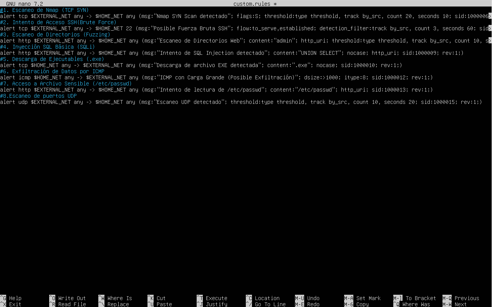
Ataque 1: Escaneo de puertos (Nmap)
Primero realizamos un escaneo desde la máquina Kali utilizando Nmap.
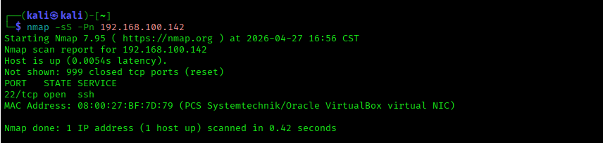
Se observa la alerta generada por el sensor IDS:
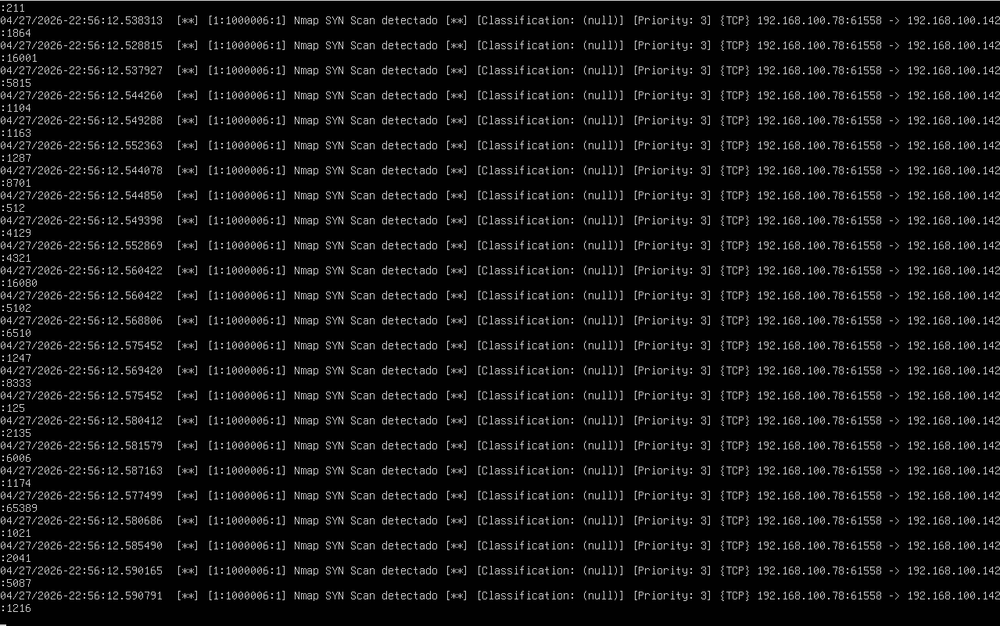
Y su correlación en el SIEM:
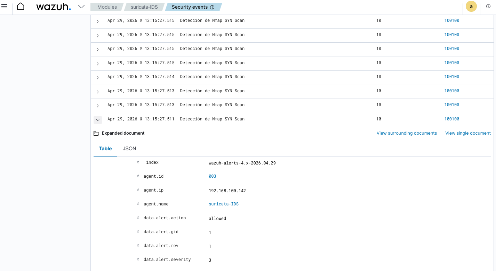
Análisis:
Se detecta un escaneo de puertos TCP, lo que indica una fase de reconocimiento por parte del atacante.
📊 Nivel de riesgo: Medio
Ataque 2: Fuerza bruta SSH (Hydra)
Se ejecuta un ataque de fuerza bruta utilizando Hydra contra el servicio SSH, empleando el diccionario RockYou.
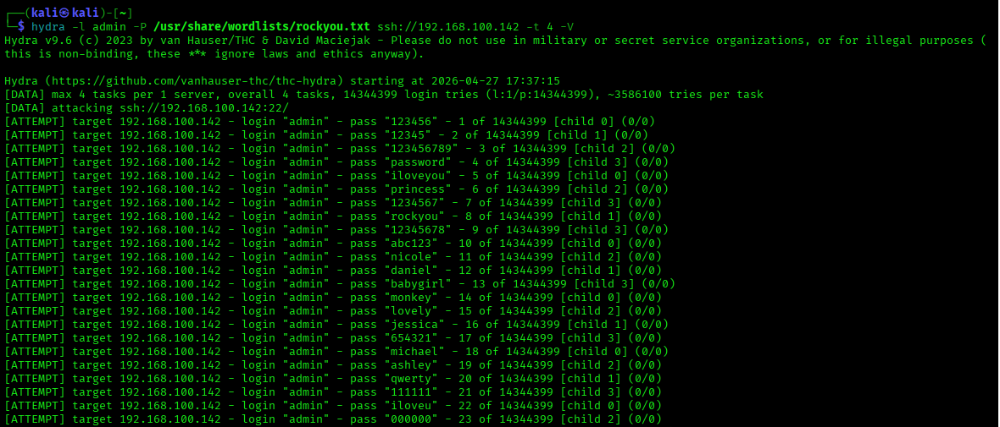
Alerta en Suricata:
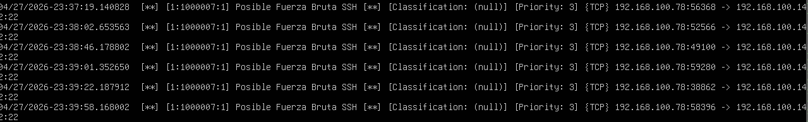
Correlación en Wazuh:
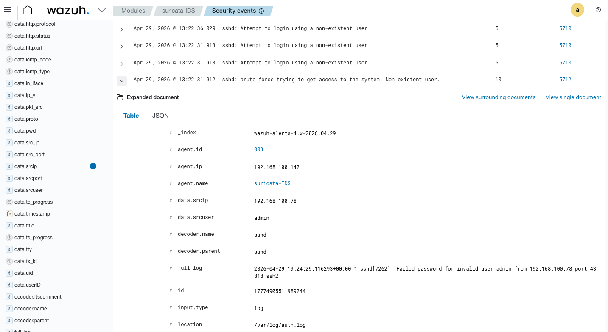
Análisis:
Se identifican múltiples intentos fallidos de autenticación, lo que indica un ataque de fuerza bruta.
📊 Nivel de riesgo: Alto
Ataque 3: Acceso repetitivo a /admin (script Bash)
Se realiza un intento de acceso repetitivo al endpoint /admin mediante un script en Bash, generando múltiples solicitudes HTTP automatizadas.
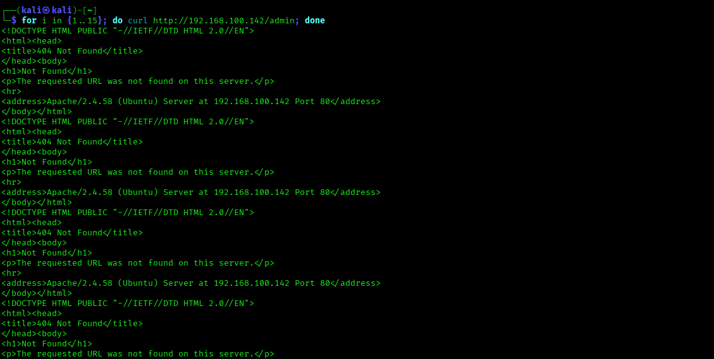
Alerta en Suricata:
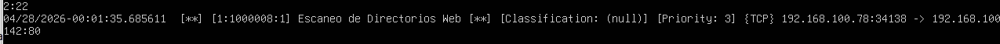
Correlación en Wazuh:
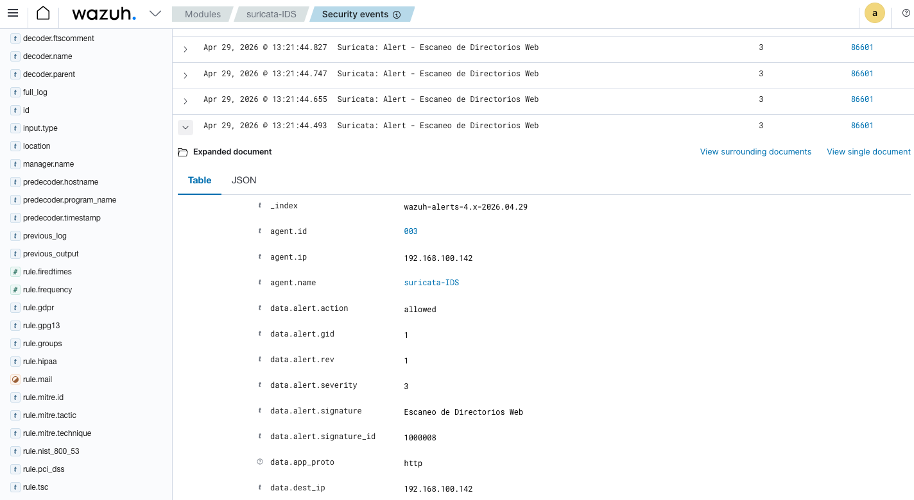
Análisis:
Se detecta tráfico repetitivo hacia un mismo recurso, lo que puede indicar reconocimiento básico o validación de la existencia del endpoint.
📊 Nivel de riesgo: Medio
Ataque 4: Inyección SQL
Se ejecuta un intento de inyección SQL con el objetivo de explotar vulnerabilidades en la aplicación web.
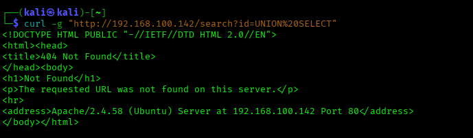
Log en Suricata:
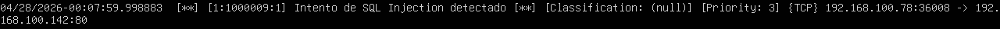
Visualización en Wazuh:
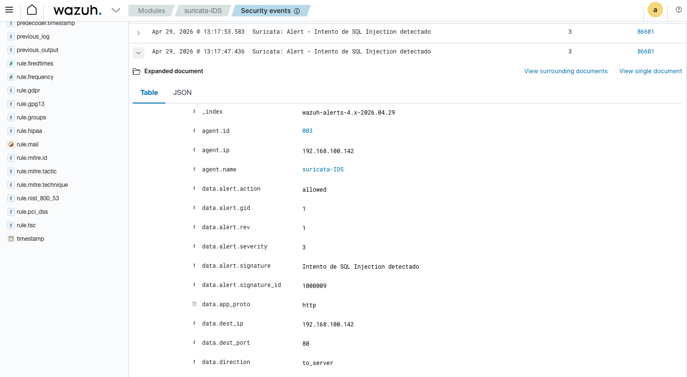
Análisis:
Se detectan patrones asociados a inyección SQL, indicando un intento de acceso no autorizado a la base de datos.
📊 Nivel de riesgo: Alto
Ataque 5: Descarga de archivo ejecutable (.exe)
Se configura una regla para detectar la descarga de archivos ejecutables. Se simula levantando un servicio que permite descargar un archivo .exe
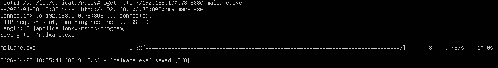
Alerta en Suricata:
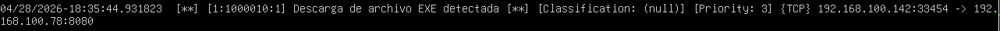
Correlación en Wazuh:
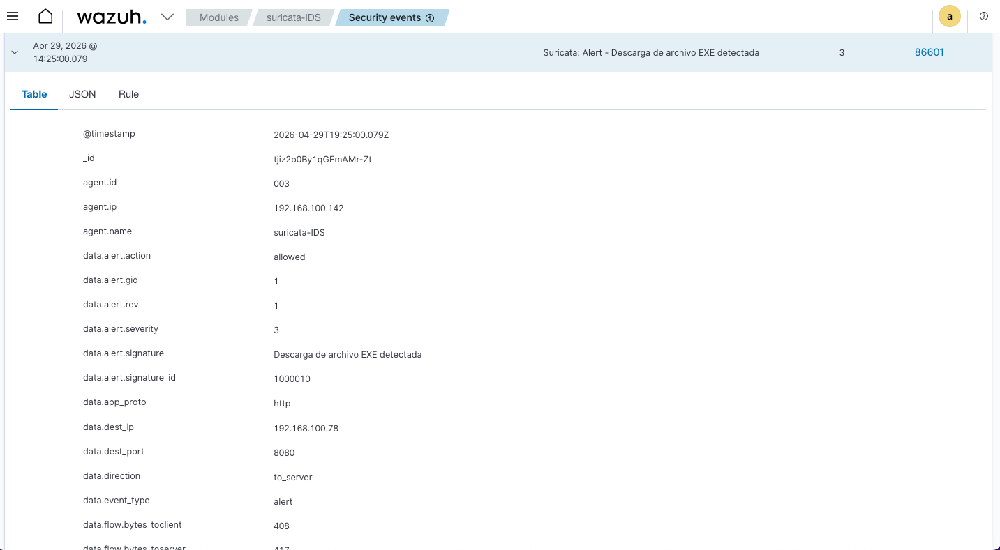
Análisis:
La descarga de archivos ejecutables puede representar un riesgo de malware o software malicioso.
📊 Nivel de riesgo: Medio
Ataque 6: Tráfico ICMP elevado
Se genera tráfico ICMP mediante un comando ping con paquetes grandes.
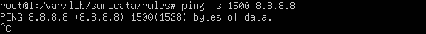
Alerta en Suricata:
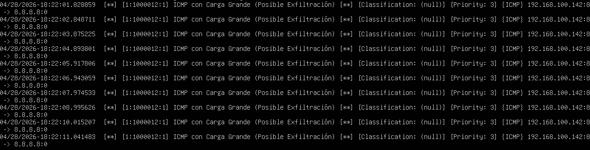
Visualización en Wazuh:
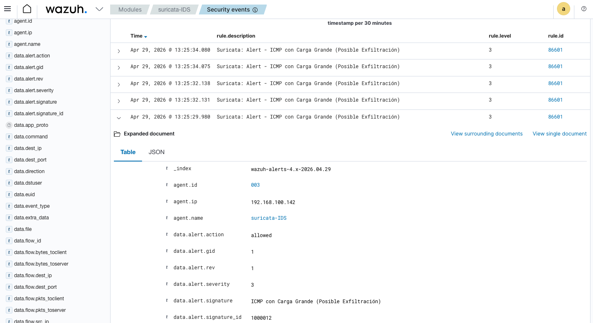
Análisis:
Se detecta un alto volumen de paquetes ICMP, lo que puede indicar pruebas de conectividad o intentos básicos de denegación de servicio.
📊 Nivel de riesgo: Bajo
Ataque 7: Acceso a información sensible (/etc/passwd)
Se intenta acceder a información sensible del servidor mediante solicitudes HTTP.
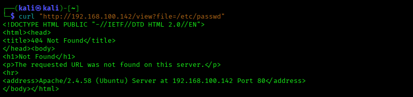
Alerta en Suricata:
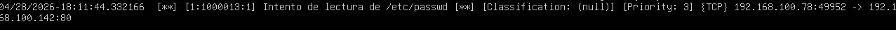
Correlación en Wazuh:
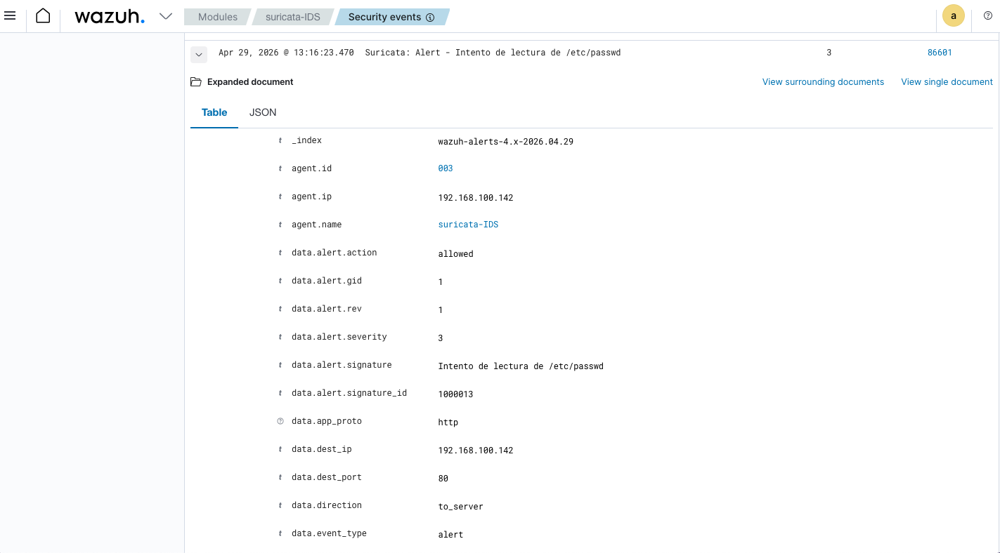
Análisis:
Se detecta un intento de acceso a archivos sensibles del sistema, lo que podría comprometer información de usuarios.
📊 Nivel de riesgo: Alto
Ataque 8: Escaneo de puertos UDP (Nmap)
Se realiza un escaneo de puertos UDP utilizando Nmap.
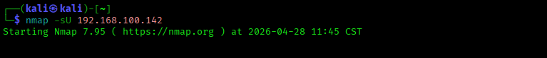
Log en Suricata:
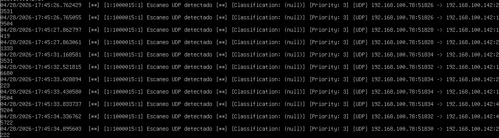
Visualización en Wazuh:
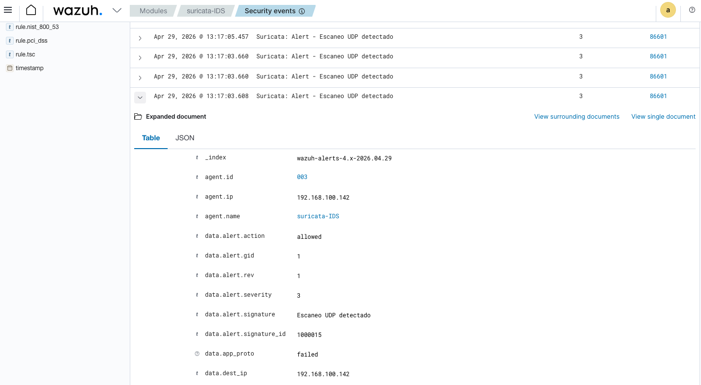
Análisis:
Se detecta actividad de reconocimiento mediante escaneo de puertos UDP.
📊 Nivel de riesgo: Medio
Conclusión
La implementación de un entorno SOC permite centralizar y correlacionar eventos de seguridad, facilitando la detección temprana de amenazas. Sin embargo, la efectividad depende de la correcta configuración de reglas y la reducción de falsos positivos. Este laboratorio demuestra la importancia del análisis de eventos y la correlación en un SIEM para una respuesta oportuna ante incidentes.